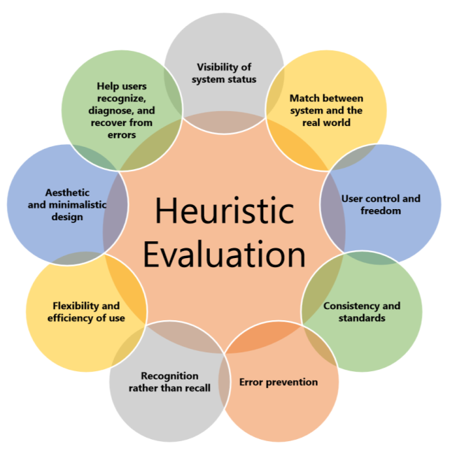

Final Project Presentation
for TDDC34
Team Stockholm
Johan Angelstam | Guanqun Li
Renquan Wang | Yunsheng Kong
Quickomat
source: http://www.quickomat.com/affaersid.html
Index
- Introduction
- Theoretical Framework
- Case Study
- Discussion & Conclusion
Introduction
Quickomat
- Background
- Vending Machine
- Tickets
- Top up Phones
- Parking Tickets
- Stakeholders
- Service Providers
- Commuters
- The Machine Manufacturer
Introduction
- Motivation & Goals
- Popular and public in south of Sweden
- Influence on regular life
- Open resources
- Limitations
- Short time frame
- Lack of data on security part
- Limit the scale of economic and macro evaluation
Theoretical Framework
Perspectives on Evaluation
- CATWOE
- Updated D&M Success Model
- Technical Evaluation
- Social Evaluation
- Security on Public Transportation
Theoretical Framework
Empirical Framework
- Heuristic Evaluation of Interface-Usability
- A set of evaluators to examine the system
- Compliance with regcognized usability principles
- Evaluators work individually but together in the end
Theoretical Framework
Empirical Framework
- Heuristic Evaluation of Interface-Usability
- Evaluation plan
- Choose evaluators
- Review heuristices
- Conduct the evaluation
- Analyze the results
Heuristic Evalualtion
Advantages of heuristics
- Fast
- Easy to carry out
- Flexible
Heuristic Evalualtion
Jacob Neilson's 10 general principles for interaction design(Neilson 1995b)

Theoretical Framework
Theory-based Framework
- Social Evaluation on Security Issue
- Data Collection
- Demographic Assessment
- Security Assessment
- Analyze the results
Case Study
CATWOE
- [Customers]
- Travelers and others users of Quickomat are the customers.
- [Actors]
- Quickomat AB and ÖstgötaTrafiken.
- [Transformation]
- Using Quickomat can reduce the potential risk of safety compared to using cash.
Case Study
CATWOE
- [Weltanschauung]
- The user now buy tickets using credit card and get tickets/card instead of cash, which will increase the safety.
- [Owners]
- [Environment]
- The location of the vending machine should be meet people’s need.
Case Study
Technical Evaluation
Evaluation Plan & Choose Evaluator
- General operations on Homepage
- Buy/Top up the bus tickets
- Top up pre-paid sim card
- Evaluator: With and without experience
Case Study
Technical Evaluation
Examples of heuristics
- Avoid unnecessary visual elements
- Make text and elements visible with sufficient contrast
- Avoid unnecessary steps
- Use confirm and next buttons sparingly -- provide back buttons (undo)
- Do not allow illegal choices
- ...
Case Study
Technical Evaluation
Analysis
- Example: Buy/Top up the bus tickets
Case Study
Social Evaluation
Data Collection
- Questionnaire
- Email Interview
Discussion & Conclustion
-
Interface-usability
- Good designed.
- Have improvement space
-
Security
- Help increase the security level
- Need further and deeper research
Thank you for your attention!
Questions?